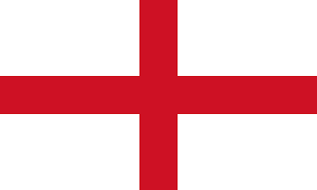
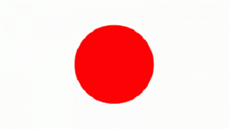
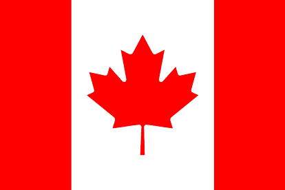
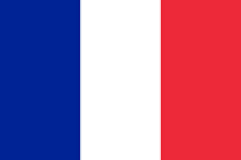
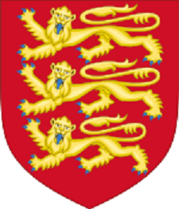
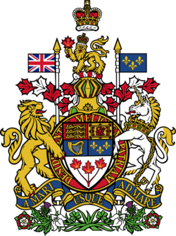
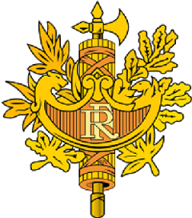
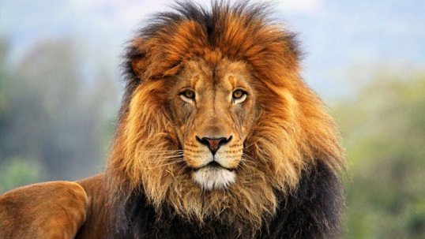
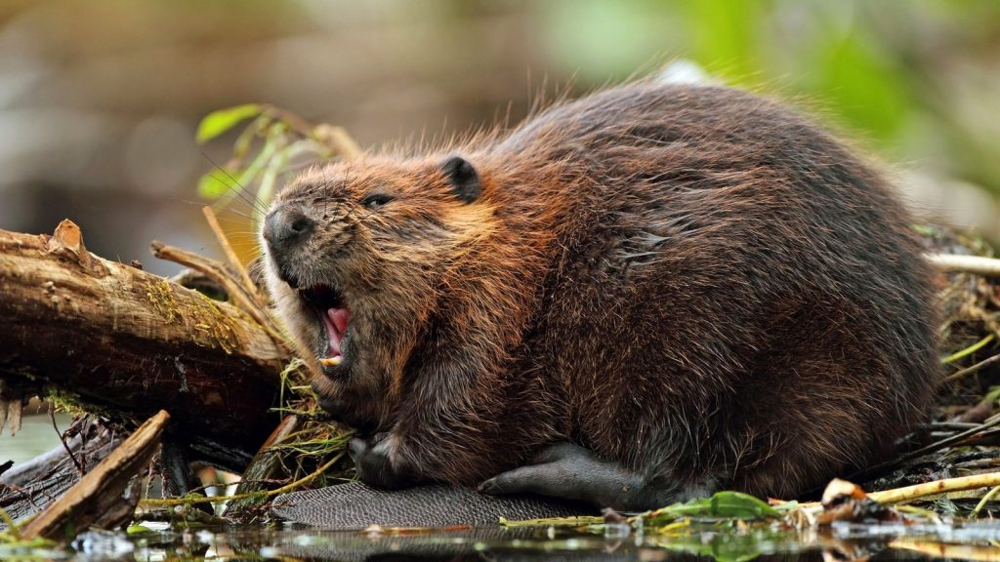
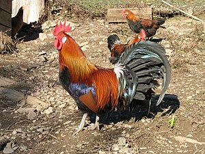

Страны мира |
|---|
Все страны хороши по своему |
|---|
| Страны |
Англия |
Япония |
Канада |
Франция |
| Флаг |

|  |
 |
 |
| Гербы |
 |
|
 |
 |
| Национальные символы |
 |
 |
 |
 |
| Столицы |
Лондон |
Токио |
Оттава |
Париж |
| Краткое описание |
Англия - одна из стран Великобритании. Население Англии составляет 55 977 000 человек. Общая площадь Англии ровна 133 396 км2 |
Япония - страна, занимающая территорию от Охотского моря на севере до Восточно-Китайского моря и Тайваня на юге. Население Японии состаяет 125 552 000 человек. Общая площадь Японии ровна 377 944 км2 |
Канада - государство в Северной Америке, крупнейшее по площади на этом континенте. Насиление Канады составляет 38 569 950 человек. Общая площадь Канады ровна 9 984 670 км2 |
Франция - трансконтинентальное государство, включающее основную территорию в Западной Европе и ряд заморских регионов и территорий. Насиление Франции составляет 68 084 217 человек. Общая площадь Франции ровна 643 801 км2 |
| Англия |
Япония |
Канада |
Франция |